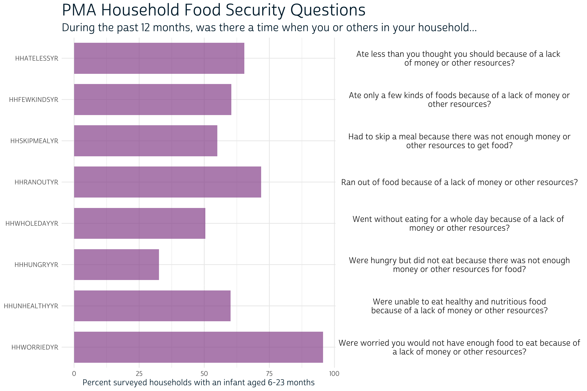
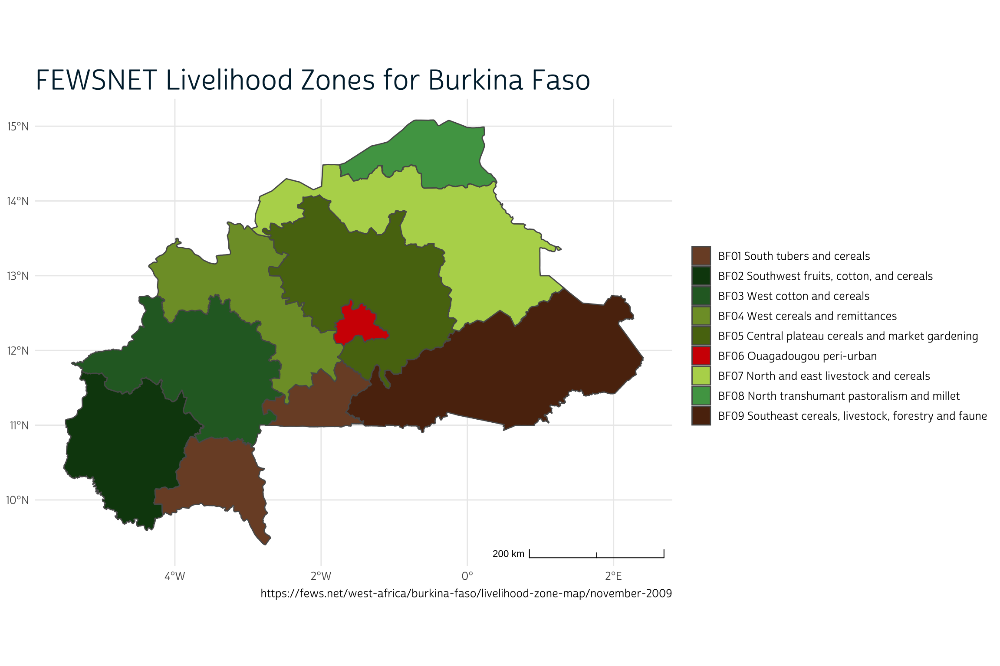
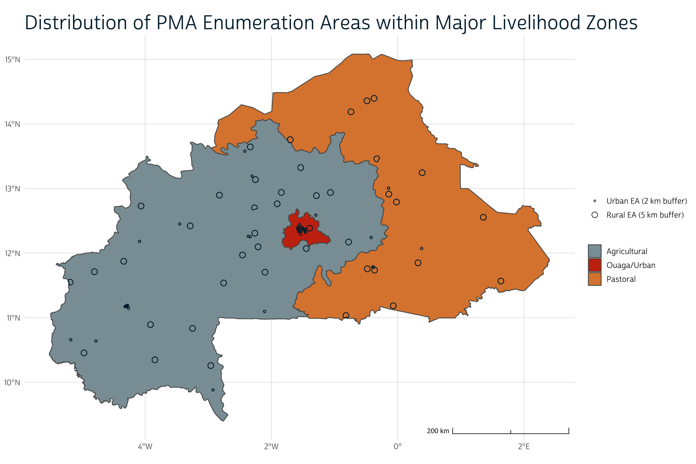
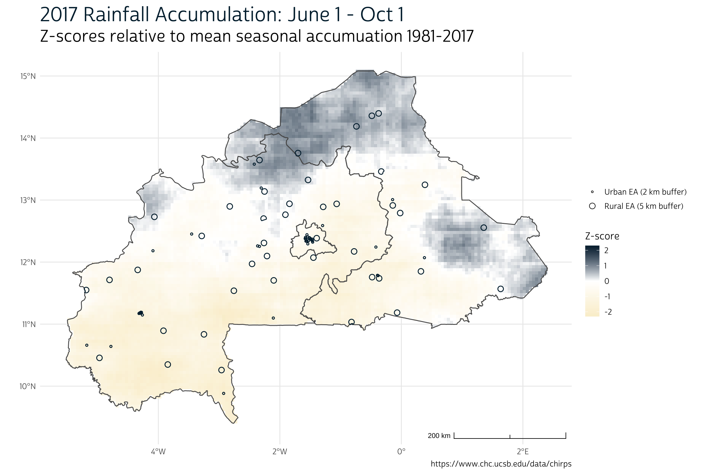
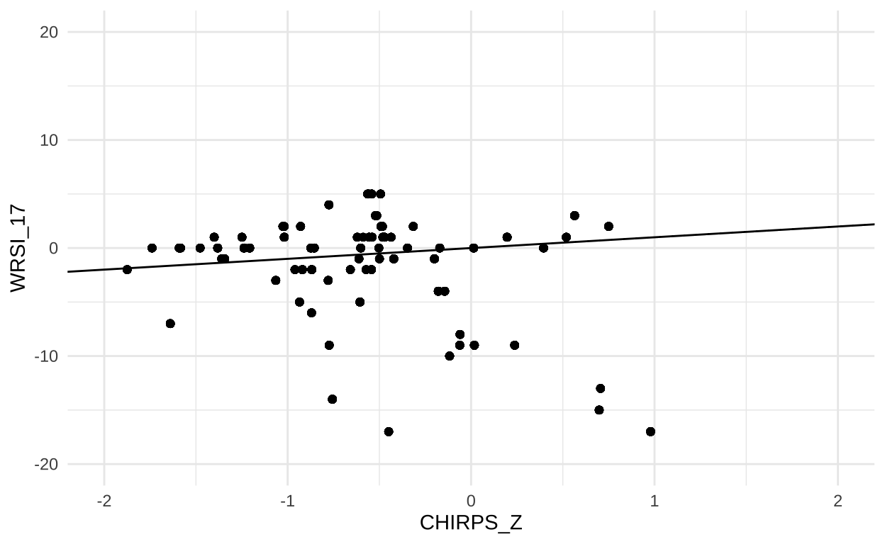

We’ve learned how to build key indicators with spatially referenced nutrition data from PMA. Now let’s see how researchers have used them.
We’re wrapping up our series on PMA nutrition surveys this week with an exciting new paper published in the journal Environmental Research Communications. Authors Jessie Pinchoff, William Turner, and Kathryn Grace look at the relationship between agricultural conditions and infant malnutrition in Burkina Faso, so their work mobilizes many of the tools we’ve demonstrated in this series so far. If you’ve been reading along, you’ll already know how to:
In this post, we’ll see how Pinchoff et al. put these pieces together to build a multi-level mixed effects logistic regression model for each of three nutrition outcomes for infants aged 6-23 months. Their results suggest that - in Burkina Faso, where many households rely on rainfed, subsistence agriculture - the quality of a particular growing season has a statistically significant impact on infant nutrition and growth.
As always in a PMA Publications post, we’ll share R code and discuss decisions about measurement and analysis as we review the author’s approach. Our hope is that you’ll find something useful for your own project linking climate and nutrition data! For background information on the prevalence of rainfed food systems and infant malnutrition in Burkina Faso - or for a discussion of the implications of these findings for policy and further research - we encourage you to check out the published paper.
The authors derive three dependent variables from the 2017 Burkina Faso nutrition sample. We’ve already demonstrated how to make two of these - Minimum Dietary Diversity MDD and Minimum Meal Frequency MMF - in an earlier post. Both MDD and MMF are defined by World Health Organization (WHO) recommendations for Infant and Young Child Feeding (IYCF) practices necessary for healthy growth and development in children during the first two years of life.
The third dependent variable is an anthropometric measurement of each infant’s physical development. IPUMS PMA nutrition surveys include INFARMCIRCVAL, a measure of the infant’s mid-upper arm circumference (MUAC) taken by the interviewer on the day of the interview. According to WHO guidelines, MUAC measurements below 11.5 centimeters indicate acute malnutrition in children aged 6-23 months, and measurements between 11.5 and 12.5 centimeters indicate risk of malnutrition. Pinchoff et al. point to a range of studies suggesting that these thresholds may be too low to properly identify malnourishment, and they note that PMA surveys were conducted largely in June or July - early months of the Burkina Faso “hunger season” before food shortages were likely to manifest in anthropometric measures. To address these issues, the authors build a binary threshold for MUAC measures below 13.5 centimeters that we’ll call MUAC_LOW.
We’ll construct one model for each of these three outcomes with a range of independent variables recoded from IPUMS PMA variables and two external data sources (more on these in a moment). We’ll be using harmonized IPUMS PMA data where possible, but we’ll mention here that the authors used source data downloaded directly from PMA before harmonized data from IPUMS PMA became available; these differences will not change our main findings, but they did impact certain design choices. For example, the authors were not able to control for the SEX of each infant, as this information was collected on the household screening questionnaire but not on the child nutrition questionnaire; IPUMS PMA has matched records from the two questionnaires together, so you might choose to include this information in your own work.
Notably absent from IPUMS PMA data are 1) the infant’s precise age in months, and 2) several variables related to perceived food insecurity in the infant’s household. The authors obtained this information directly from PMA source data (although it may be available from IPUMS PMA soon). We’ve previously shown how to use currently available IPUMS PMA data to accurately estimate each infant’s age within one month, but we’ll use the precise age of the infant on the day of the interview here. We’ve also pre-constructed a measure of household food insecurity HHFOODINSEC from source data: food insecurity is ranked “Severe” if 6 or more of the following statements were true, “Moderate” if 4-5 were true, and “Low/None” otherwise.

We’ve also recoded some existing IPUMS PMA variables beforehand, and we’ve located information about each child’s mother (including her own MUAC measurements) using a procedure described here. We removed all cases from the file except for infants aged 6-23 months without missing responses, and then saved this “cleaned” dataset as an R data file. We’ll use read_rds to load it into R now:
We’ll use our favorite table-making package, gtsummary, to preview all of the PMA nutrition variables we’ve made.
library(gtsummary)
dat %>%
select(
INFAGE_3, INFDIAR, MOMAGE_4, MOMEDUC, MOMMUAC_3,
HHKIDS_4, HHFOODINSEC, MAD, MDD, MMF, MUAC_LOW
) %>%
tbl_summary() %>%
modify_spanning_header(everything() ~ "# PMA Nutrition Variables") %>%
modify_header(update = list(label ~ " ")) %>%
italicize_labels() %>%
as_gt() %>%
gt::tab_options(table.width = gt::pct(75))
PMA Nutrition Variables |
|
|---|---|
| N = 1,7221 | |
| Infant's age | |
| 6-11 | 638 (37%) |
| 12-17 | 586 (34%) |
| 18-23 | 498 (29%) |
| Infant diarrhea last 2 wks | 580 (34%) |
| Mother's age | |
| 35+ | 336 (20%) |
| 25-34 | 809 (47%) |
| 20-24 | 431 (25%) |
| <20 | 146 (8.5%) |
| Mother ever attended school | 632 (37%) |
| Mother's MUAC (cm) | |
| Normal (>25 cm) | 1,270 (74%) |
| Risk (22.1-25 cm) | 412 (24%) |
| Acute (22 cm or less) | 40 (2.3%) |
| Household total kids under 5 | |
| 1 | 646 (38%) |
| 2 | 457 (27%) |
| 3 | 291 (17%) |
| 4+ | 328 (19%) |
| Household food insecurity | |
| Low/None | 1,012 (59%) |
| Moderate | 314 (18%) |
| Severe | 396 (23%) |
| Minimum Acceptable Diet (MAD) | 178 (10%) |
| Minimum Dietary Diversity (MDD) | 265 (15%) |
| Minimum Meal Frequency (MMF) | 910 (53%) |
| MUAC 13.5 cm or less | 568 (33%) |
|
1
n (%)
|
|
The authors derive two additional independent variables - including their key predictor of interest - from external datasets distributed by the Famine Early Warning Systems Network (FEWSNET).
The first external data source concerns livelihood zones for the enumeration areas used to identify households in the PMA nutrition sample. Livelihood zones describe the main ways that workers in a particular area earn income and procure food, and they are used widely in climate-health research. You can download a shapefile from FEWSNET describing nine distinct livelihood zones for Burkina Faso here.
We’ve downloaded the shapefile BF_LHZ_2014 and saved it in the “data” folder of our working directory. Let’s load it into R with the sf package and call the resulting object lhz.
We’ll want to find a livelihood zone classification for each PMA enumeration area, so we’ll also need to obtain their displaced GPS coordinates from PMA. In our last post, we described steps for creating buffer zones containing the actual centroid location for each enumeration area, subject to certain rules:
We’ve downloaded 1) a CSV file containing the displaced GPS coordinates, and 2) a shapefile containing administrative boundaries for Burkina Faso. Both are saved in the “data” folder of our working directory. We’ll load both into R and create gps_buf to represent the buffer zones for each enumeration area.
# Displaced gps coordinates
gps <- read_csv("data/gps_bf.csv") %>%
select(EAID = EA_ID, GPSLONG, GPSLAT) %>%
st_as_sf(coords = c("GPSLONG", "GPSLAT"), crs = 4326) %>%
left_join(
by = "EAID",
dat %>% select(EAID, URBAN) %>% distinct()
)
# Shapefile
shape <- st_read("data/shape_bf") %>% select(ADMIN_NAME)
# Project `gps` and `shape` to meters
gps <- gps %>% st_transform(crs = 32630)
shape <- shape %>% st_transform(crs = 32630)
# Create buffers
gps_buf <- gps %>%
st_buffer(if_else(.$URBAN, 2000, 5000)) %>%
st_intersection(shape) %>%
st_filter(gps)
# Revert to WGS84
gps <- gps %>% st_transform(crs = 4326)
shape <- shape %>% st_transform(crs = 4326)
gps_buf <- gps_buf %>% st_transform(crs = 4326)
Now, let’s plot the nine FEWNET livelihood zones in lhz with ggspatial.
library(ggspatial)
source("make_theme.R")
ggplot() +
layer_spatial(lhz, aes(fill = label)) +
theme_pma(
title = "FEWSNET Livelihood Zones for Burkina Faso",
caption = paste0(
"https://fews.net/west-africa/burkina-faso/",
"livelihood-zone-map/november-2009"
)
) +
scale_fill_manual(
name = NULL,
values = c("#7B4D30", "#0E440F", "#29682C", "#7E9C32", "#587211",
"#D20501", "#B5D55A", "#4FA252", "#5C2D0F")
)

To simplify things a bit, the authors collapse these nine zones into three major categories: urban (Ouaga), agricultural, and pastoral (or agropastoral). We’ll do the same here, and then map the result.
lhz <- lhz %>%
mutate(LIVZ_3 = case_when(
LZCODE == "BF06" ~ "Ouaga/Urban",
LZCODE %in% c("BF07", "BF08", "BF09") ~ "Pastoral",
T ~ "Agricultural"
))
ggplot() +
layer_spatial(
lhz %>% count(LIVZ_3) %>% st_make_valid() ,
aes(fill = LIVZ_3)
) +
layer_spatial(gps_buf, color = "#00263A", alpha = 0) +
theme_pma(
title = "Distribution of PMA Enumeration Areas within Major Livelihood Zones",
show_eas = TRUE
) +
scale_fill_manual(
name = NULL,
values = c( "#899DA4", "#C93311", "#DC863B")
)

We’ll now assign each enumeration area one of those three categories in dat. In the rare case where a buffer overlaps with a boundary between livelihood zones, we’ll use whichever livelihood zone contains the centroid. As we’ll see, a majority of the sampled infants reside in “agricultural” areas (54%) or “pastoral” areas (30%). Only a small minority reside in the Ouaga “urban” area (16%).
dat <- lhz %>%
mutate(LIVZ_3 = case_when(
LZCODE == "BF06" ~ "Ouaga/Urban",
LZCODE %in% c("BF07", "BF08", "BF09") ~ "Pastoral",
T ~ "Agricultural"
)) %>%
st_intersection(gps_buf) %>% # find the intersection with EA buffers
st_filter(gps) %>% # keep only if it contains the centroid
tibble() %>%
select(EAID, LIVZ_3) %>%
right_join(dat, by = "EAID")
dat %>%
select(LIVZ_3) %>%
tbl_summary() %>%
modify_spanning_header(
everything() ~ "# Recoded FEWSNET Livelihood Zones"
) %>%
modify_header(update = list(label ~ " ")) %>%
italicize_labels() %>%
as_gt() %>%
gt::tab_options(table.width = gt::pct(75))
Recoded FEWSNET Livelihood Zones |
|
|---|---|
| N = 1,7221 | |
| Livelihood zone | |
| Agricultural | 924 (54%) |
| Pastoral | 517 (30%) |
| Ouaga/Urban | 281 (16%) |
|
1
n (%)
|
|
The final data source concerns the authors’ main predictor of interest: agricultural conditions in the infant’s enumeration area that may influence the abundance and variety of available food, or the livelihoods of families involved with agricultural work.
Here, the authors use a crop-specific Water Requirement Satisfaction Index (WRSI) - also developed by FEWSNET - to model precipitation relative to other meteorological factors that drive evaporation and transpiration (e.g. solar radiation, air temperature, humidity, and wind). Rainfall, alone, can sometimes serve as a good proxy for agricultural conditions, but not if the water evaporates before it becomes available for plants. WRSI also models the growing season for a selected reference crop - in this case, millet - to test whether rainfall occurs during the most crucial stages of plant development.
To see why all of this matters, let’s take a look at a simple rainfall total for the 2017 growing season. Following the steps outlined in our last post, we’ve download a dataset from the Climate Hazards center InfraRed Precipitation with Station (CHIRPS) series spanning the years 1981 (the first year of data collection) through 2017. We calculated a simple terra::sum for each year’s growing season (approximated as June 1 to Oct 1) and saved the result in a raster with one layer for each year’s total seasonal accumulation (in millimeters).
class : SpatRaster
dimensions : 115, 159, 37 (nrow, ncol, nlyr)
resolution : 0.05, 0.05 (x, y)
extent : -5.549997, 2.400003, 9.349999, 15.1 (xmin, xmax, ymin, ymax)
coord. ref. : lon/lat WGS 84 (EPSG:4326)
source : chirps_sums.tif
names : 1981, 1982, 1983, 1984, 1985, 1986, ...
min values : 156.65630, 170.00345, 139.44662, 63.97786, 121.26834, 171.29820, ...
max values : 985.3304, 834.6878, 862.3036, 1024.9135, 1053.9604, 1017.6069, ... Suppose we simply wanted to gauge whether 2017 was especially wetter or drier than average in a particular place. We could calculate a simple z-score and map the result:
z_scores <- (yr_sums$`2017` - mean(yr_sums)) / stdev(yr_sums)
ggplot() +
layer_spatial(mask(z_scores, vect(shape), touches = FALSE)) +
layer_spatial(lhz %>% count(LIVZ_3) %>% st_make_valid(), alpha = 0) +
layer_spatial(gps_buf, color = "#00263A", alpha = 0) +
theme_pma(
title = "2017 Rainfall Accumulation: June 1 - Oct 1",
subtitle = "Z-scores relative to mean seasonal accumuation 1981-2017",
caption = "https://www.chc.ucsb.edu/data/chirps",
show_eas = TRUE
) +
scale_fill_gradient2(
name = "Z-score",
limits = c(-2.3, 2.3),
low = "#FAEFD1",
high = "#00263A",
na.value = "transparent"
)

As you can see, there’s a good deal of spatial variation in the Burkina Faso rainfall totals for 2017. In our map, the z-score “0” indicates a perfectly average year, whereas z-scores “1” and “-1” indicate rainfall totals exactly 1 standard deviation above or below average, respectively. Enumeration areas located in the northern and eastern regions experienced more rainfall than normal in 2017, while those in the south and west experienced less.
We’ll assign one z-score to each enumeration area by taking a weighted average of the pixels that overlap with each buffer: the extract function will produce a “weight” equal to the proportion of each pixel included within the boundaries of a given buffer. Finally we’ll match these z-scores to each of the infants in dat.
dat <- z_scores %>%
extract(gps_buf %>% vect(), weights = TRUE) %>%
tibble() %>%
right_join(gps_buf %>% rowid_to_column("ID"), by = "ID") %>%
group_by(EAID) %>%
summarise(CHIRPS_Z = weighted.mean(`2017`, weight)) %>%
full_join(dat, by = "EAID")
Now, let’s compare these relative rainfall totals to WRSI scores obtained for each enumeration area. FEWSNET provides free software called GeoWRSI that you can use to specify a reference crop, source data, and other parameters used to calculate WRSI. The authors used CHIRPS data combined with NOAA ESRL PSD Global Reference Evapotranspiration for the FEWS NET Science Community (RefET) to calculate WRSI scores for millet. They’ve shared the program output with us as WRSI.dta, so we’ll simply attach the WRSI score for each EA to dat.
Because CHIRPS precipitation totals were used to derive WRSI, you might expect to see a strong correlation between the two measures. We should see this if we create a scatterplot for each of the enumeration areas in dat:
dat %>%
ggplot(aes(x = CHIRPS_Z, y = WRSI_17)) +
geom_point() +
geom_abline() +
theme_minimal() +
xlim(-2, 2) +
ylim(-20, 20)

In fact, the correlation between rainfall and WRSI is positive, but somewhat weak. Here, a negative value for WRSI indicates poor growing conditions for millet. There are a handful of enumeration areas where conditions were wetter than normal (CHIRPS_Z > 0), but overall conditions for growing millet were poor (WRSI < 0). This can happen if, for example, if conditions in 2017 were also hotter than normal (driving evaporation), or if rainfall occurred at the wrong stage of plant development. Overall, most enumeration areas were located in areas that experienced less rainfall than normal (CHIRPS_Z < 0), but only a few of these experienced exceptionally poor growing conditions for millet.
For these reasons, the authors use WRSI rather than the simpler CHIRPS z-scores we’ve derived. As we’ll see, they find that - controlling for all of the other independent variables we’ve discussed so far - there is a statistically significant relationship between “good agricultural conditions” and positive nutritional outcomes for infants.
dat %>%
select(WRSI_17, CHIRPS_Z) %>%
tbl_summary(label = list(
WRSI_17 = "WRSI Anomaly",
CHIRPS_Z = "CHIRPS Z-score"
)) %>%
modify_spanning_header(
everything() ~ "# 2017 Agricultural Conditions"
) %>%
modify_header(update = list(label ~ " ")) %>%
italicize_labels() %>%
as_gt() %>%
gt::tab_options(table.width = gt::pct(75))
2017 Agricultural Conditions |
|
|---|---|
| N = 1,7221 | |
| WRSI Anomaly | 0.0 (-4.0, 1.0) |
| CHIRPS Z-score | -0.54 (-0.92, -0.18) |
|
1
Median (IQR)
|
|
If you’re a regular reader of this blog, you might remember that we’ve previously shown how to model binary outcomes like unmet need for family planning and current contraceptive use with cluster-robust standard error estimation via the survey package. When we do so, we address the likelihood that neighboring households - those in the same enumeration area - probably share many common features. While the point-estimate for each predictor is identical to the estimate you’d obtain from logistic regression, the estimated standard error for each predictor is typically larger. Practically speaking, we make it harder for each predictor to pass the same test for statistical significance (e.g. “p < .05”) because we suspect that the clustered sample design produces artificial agreement between respondents.
Pinchoff et al. use a different approach to solve the same problem, except that their multi-level mixed effects model incorporates variation within and between enumeration areas into the estimate associated with each predictor. As a result, both the point-estimate and the standard error associated with each is different compared to what you’d obtain from logistic regression.
You might imagine this approach in contrast to a naive fixed effects model where we simply plugged in EAID as an independent variable. Because EAID is categorical, we’d effectively create one “dummy variable” for every enumeration area (categorical variables like LIVZ_3 or MOMEDUC are handled this way). The estimates for all of our other independent variables would be “controlled for” variation between enumeration areas.
When we treat enumeration areas as random effects, we explicitly incorporate this sort of variation into our model. Compared with the fixed effects approach - where each “dummy variable” is defined by infants from the same enumeration area - the random effects approach combines what we know about one enumeration area with information about how it compares with the others. The result is an improved estimation for every “dummy variable,” because each incorporates information from the full sample. More importantly, this generally reduces the standard error for each predictor. Let’s see how the authors implemented this approach to model MUAC_LOW, MDD, and MFF.
Most of the functions we use for multi-level modeling come from the lme4 package. We’ll need an analogue to the glm function that allows us to specify a “binomial” link function and a formula that specifies EAID as a random effect.
Here, we use glmer to build three models: one that controls for MDD, one that controls for MMF, and one that controls for neither. The notation (1|EAID) signals that we’ll be fitting 1 intercept for each enumeration area (note, however, that these intercepts are not reported in the model output; instead, we’ll see a standard deviation summarizing the dispersion between these intercepts).
MUAC1 <- glmer(
data = dat,
family = "binomial",
formula = MUAC_LOW ~ WRSI_17 + LIVZ_3 + MOMAGE_4 + MOMMUAC_3 +
INFDIAR + MOMEDUC + HHKIDS_4 + INFAGE_3 + (1|EAID)
)
MUAC2 <- glmer(
data = dat,
family = "binomial",
formula = MUAC_LOW ~ WRSI_17 + MDD + LIVZ_3 + MOMAGE_4 + MOMMUAC_3 +
INFDIAR + MOMEDUC + HHKIDS_4 + INFAGE_3 + (1|EAID)
)
MUAC3 <- glmer(
data = dat,
family = "binomial",
formula = MUAC_LOW ~ WRSI_17 + MMF + LIVZ_3 + MOMAGE_4 + MOMMUAC_3 +
INFDIAR + MOMEDUC + HHKIDS_4 + INFAGE_3 + (1|EAID)
)
The next step looks messy, but it’s mostly just formatting the output to fit in a gtsummary table. Basically, we’ll use purrr::map to create one table for each model, and then store them in a list. Then we use gtsummary::tbl_merge to merge them together. The rest is just creating labels, moving rows, and setting the overall look of the table on this page:
list(MUAC1, MUAC2, MUAC3) %>%
map(
~.x %>%
tbl_regression(
exp = TRUE,
conf.int = TRUE,
show_single_row = where(is.logical),
tidy_fun = broom.mixed::tidy,
label = list(
`EAID.sd__(Intercept)` = "Random Effects: EAID (standard deviation)"
)
) %>%
add_significance_stars()
) %>%
tbl_merge() %>%
italicize_labels() %>%
modify_header(update = list(label ~ " ")) %>%
modify_spanning_header(update = list(
estimate_1 ~ "**Model 1**",
std.error_1 ~ "**Model 1**",
estimate_2 ~ "**Model 2**",
std.error_2 ~ "**Model 2**",
estimate_3 ~ "**Model 3**",
std.error_3 ~ "**Model 3**"
)) %>%
modify_table_body(
~.x %>%
mutate(variable = variable %>% fct_relevel(c(
"WRSI_17", "MDD", "MMF", "LIVZ_3", "MOMAGE_4", "MOMMUAC_3",
"INFDIAR", "MOMEDUC", "HHKIDS_4", "INFAGE_3", "EAID.sd__(Intercept)"
))) %>%
arrange(variable)
) %>%
as_gt() %>%
gt::tab_options(table.width = gt::pct(100)) %>%
gt::tab_header(
gt::md("# Factors Associated with <br> MUAC <= 13.5 cm")
)
Factors Associated with
|
||||||
|---|---|---|---|---|---|---|
| Model 1 | Model 2 | Model 3 | ||||
| OR1,2 | SE2 | OR1,2 | SE2 | OR1,2 | SE2 | |
| WRSI anomaly 2017 | 0.97* | 0.016 | 0.97* | 0.016 | 0.97* | 0.016 |
| Minimum Dietary Diversity (MDD) | 0.67* | 0.115 | ||||
| Minimum Meal Frequency (MMF) | 1.03 | 0.118 | ||||
| Livelihood zone | ||||||
| Agricultural | — | — | — | — | — | — |
| Pastoral | 1.20 | 0.220 | 1.19 | 0.214 | 1.20 | 0.220 |
| Ouaga/Urban | 1.09 | 0.254 | 1.08 | 0.249 | 1.09 | 0.254 |
| Mother's age | ||||||
| 35+ | — | — | — | — | — | — |
| 25-34 | 0.96 | 0.141 | 0.97 | 0.142 | 0.96 | 0.141 |
| 20-24 | 0.93 | 0.156 | 0.92 | 0.155 | 0.93 | 0.156 |
| <20 | 1.17 | 0.260 | 1.16 | 0.260 | 1.17 | 0.261 |
| Mother's MUAC (cm) | ||||||
| Normal (>25 cm) | — | — | — | — | — | — |
| Risk (22.1-25 cm) | 1.64*** | 0.208 | 1.65*** | 0.210 | 1.64*** | 0.209 |
| Acute (22 cm or less) | 2.71** | 0.937 | 2.71** | 0.935 | 2.71** | 0.937 |
| Infant diarrhea last 2 wks | 1.22 | 0.143 | 1.20 | 0.141 | 1.22 | 0.144 |
| Mother ever attended school | 0.71** | 0.092 | 0.73* | 0.094 | 0.71** | 0.092 |
| Household total kids under 5 | ||||||
| 1 | — | — | — | — | — | — |
| 2 | 1.17 | 0.164 | 1.17 | 0.164 | 1.17 | 0.164 |
| 3 | 1.13 | 0.186 | 1.13 | 0.186 | 1.13 | 0.187 |
| 4+ | 1.21 | 0.196 | 1.20 | 0.194 | 1.21 | 0.196 |
| Infant's age | ||||||
| 6-11 | — | — | — | — | — | — |
| 12-17 | 0.80 | 0.104 | 0.84 | 0.109 | 0.80 | 0.104 |
| 18-23 | 0.81 | 0.110 | 0.83 | 0.113 | 0.81 | 0.110 |
| Random Effects: EAID (standard deviation) | 0.48 | 0.46 | 0.48 | |||
|
1
*p<0.05; **p<0.01; ***p<0.001
2
OR = Odds Ratio, SE = Standard Error
|
||||||
Generally speaking, all three of these models suggest that improved agricultural conditions in the enumeration area (measured by WRSI) are associated with lower odds of infant malnourishment (measured by a MUAC 13.5 cm or lower). This effect is roughly the same whether we control for IYCF practices (MDD and MMF) or not. The authors note that “for some children who are near the margin or threshold for intervention, seasonal variation in agricultural yield could therefore play an important role in shifting them from (or into) different risk categories.”
Controlling for WRSI, infants who consume a diverse diet (measured by MDD) appear significantly less likely to have MUAC measurements below 13.5 cm. However, meal frequency (measured by MMF) had no statistically significant effect. Other significant factors are related to the mother’s nutritional status and her education level.
We’ll use the same appraoch to recreate the authors models for MDD and MMF:
MDD <- glmer(
data = dat,
family = "binomial",
formula = MDD ~ WRSI_17 + LIVZ_3 + MOMAGE_4 + HHFOODINSEC + MOMEDUC +
HHKIDS_4 + INFAGE_3 + (1|EAID)
)
MMF <- glmer(
data = dat,
family = "binomial",
formula = MMF ~ WRSI_17 + LIVZ_3 + MOMAGE_4 + HHFOODINSEC + MOMEDUC +
HHKIDS_4 + INFAGE_3 + (1|EAID)
)
list(MMF, MDD) %>%
map(
~.x %>%
tbl_regression(
exp = TRUE,
conf.int = TRUE,
show_single_row = where(is.logical),
tidy_fun = broom.mixed::tidy,
label = list(
`EAID.sd__(Intercept)` = "Random Effects: EAID (standard deviation)"
)
) %>%
add_significance_stars()
) %>%
tbl_merge() %>%
italicize_labels() %>%
modify_header(update = list(label ~ " ")) %>%
modify_spanning_header(update = list(
estimate_1 ~ "**Minimum Meal Frequency (MMF)**",
std.error_1 ~ "**Minimum Meal Frequency (MMF)**",
estimate_2 ~ "**Minimum Dietary Diversity (MDD)**",
std.error_2 ~ "**Minimum Dietary Diversity (MDD)**"
)) %>%
modify_table_body(
~.x %>%
mutate(variable = variable %>% fct_relevel(c(
"WRSI_17", "LIVZ_3", "HHFOODINSEC", "MOMAGE_4", "MOMEDUC",
"HHKIDS_4", "INFAGE_3", "EAID.sd__(Intercept)"
))) %>%
arrange(variable)
) %>%
as_gt() %>%
gt::tab_options(table.width = gt::pct(100)) %>%
gt::tab_header(
gt::md("# Factors Associated with <br> Recommended IYCF Practices")
)
Factors Associated with
|
||||
|---|---|---|---|---|
| Minimum Meal Frequency (MMF) | Minimum Dietary Diversity (MDD) | |||
| OR1,2 | SE2 | OR1,2 | SE2 | |
| WRSI anomaly 2017 | 1.02 | 0.025 | 1.07* | 0.034 |
| Livelihood zone | ||||
| Agricultural | — | — | — | — |
| Pastoral | 1.48 | 0.390 | 0.83 | 0.276 |
| Ouaga/Urban | 1.46 | 0.450 | 0.87 | 0.331 |
| Household food insecurity | ||||
| Low/None | — | — | — | — |
| Moderate | 0.86 | 0.129 | 0.77 | 0.166 |
| Severe | 0.91 | 0.139 | 0.58* | 0.128 |
| Mother's age | ||||
| 35+ | — | — | — | — |
| 25-34 | 1.04 | 0.151 | 1.13 | 0.227 |
| 20-24 | 0.85 | 0.141 | 0.81 | 0.190 |
| <20 | 0.61* | 0.138 | 0.90 | 0.289 |
| Mother ever attended school | 1.10 | 0.143 | 1.75*** | 0.297 |
| Household total kids under 5 | ||||
| 1 | — | — | — | — |
| 2 | 1.09 | 0.150 | 0.93 | 0.172 |
| 3 | 0.81 | 0.133 | 0.89 | 0.203 |
| 4+ | 1.07 | 0.174 | 0.76 | 0.184 |
| Infant's age | ||||
| 6-11 | — | — | — | — |
| 12-17 | 1.38* | 0.176 | 2.78*** | 0.520 |
| 18-23 | 1.96*** | 0.263 | 2.18*** | 0.422 |
| Random Effects: EAID (standard deviation) | 0.83 | 0.99 | ||
|
1
*p<0.05; **p<0.01; ***p<0.001
2
OR = Odds Ratio, SE = Standard Error
|
||||
Here, improved agricultural conditions in the enumeration area are again broadly associated with improved nutritional outcomes, but only MDD is shown to be significantly improved by higher WRSI scores. Infants whose mother perceived “severe” food insecurity in their household (answering 6 or more questions positively) were significantly less likely to achieve MDD, but the effect on infant MMF was ambiguous.
What do we make of the difference between dietary diversity and meal frequency? The authors suggest that it might be easier for respondents to recall types of foods compared to the frequency of food consumption if, for example, mothers were not present for every meal (or if small meals are not recalled, if meal times are inconsistent, etc). Similarly, they may be more sensitive to changes in the composition of their family’s diet, whereas meal timing / occurrence may be less connected with an individual’s perception of food security.
The kinds of dietary recall questions you’ll find in PMA nutrition surveys are common, but they’re rarely accompanied by the kind of spatial data Pinchoff et al. bring to this analysis. If you’re working on a research project that uses spatially referenced nutrition data - or if you’re using remotely sensed climate data together with other global health surveys - we’d love to hear from you. As always, you can reach us in the comments below or on Twitter.
Coming up later this month: we’ll be diving into the brand new SDP client exit interview data available from IPUMS PMA. As we’ll see, there are plenty of exciting ways to explore spatial dynamics of service delivery, as well.
Special thanks to Greg Husak at the the Climate Hazards Center, and Jiao Yu at the University of Minnesota for excellent help with this post!
If you see mistakes or want to suggest changes, please create an issue on the source repository.